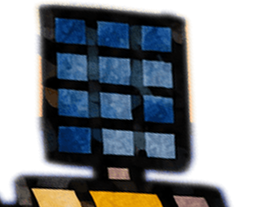
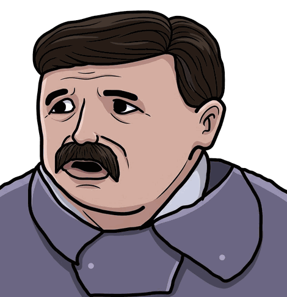
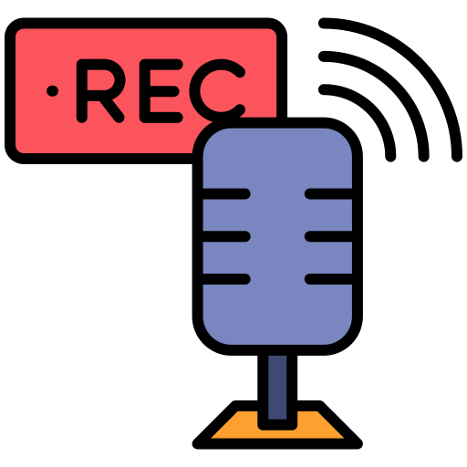

Papelera
Pags Web
Juegos
FOTOS
Música
CV

Agus.db

Atendedor.ia
Notas

Grabadora
Paint
Agus.db — Consola SQL
_
▢
✕
Archivo
Editar
Consulta
Ayuda
Ejecutar consulta
F5
Restaurar base «Agus»
Vaciar base (lienzo en blanco)
Limpiar editor
Seleccionar todo
Ctrl+A
Insertar plantilla · CREATE TABLE
Ejecutar
Ctrl+Enter
Ejemplo · resumen del CV
Ejemplo · experiencia reciente
Ejemplo · tecnologías por categoría
Ejemplo · ver el esquema
Acerca de…
Ejecutar
Limpiar
+ Nueva tabla…
Ejemplo
Base:
Agus
· SQLite 3
-- Escribí tu consulta sobre Agus. Podés usar las tablas del panel izquierdo. -- Ejemplo: SELECT * FROM Info;
Resultados
▤
Sin resultados todavía.
Probá
SELECT * FROM info;
y presioná Ejecutar.
Iniciando…
0 filas
0 ms
Base «Agus» · SQLite · se guarda en este navegador
✕
✕
▶
Agus.db — Consola SQL
Agu
--:--
Acerca de Consola SQL
✕
Agus.db
Consola SQL con mi Curriculum como base de datos SQLite.
La base "Agus" y tus cambios viven en este equipo
— Archivo → Restaurar base Agus vuelve al esquema original.
Aceptar